The neural mechanism of state-dependent changes in perception
Veith Weilnhammer, Ray Dolan
Max Planck UCL Centre for Computational Psychiatry and Ageing Research

It started with strange noises through the wall, quiet and barely recognizable, as if someone were eavesdropping.
Over time, I could make out the voice of my neighbor. I had to investigate.
At first, I only heard his voice in my apartment, but later he followed me to other places.
Then it dawned on me - he's an agent!

It started with strange noises through the wall, quiet and barely recognizable, as if someone were eavesdropping.
Over time, I could make out the voice of my neighbor. I had to investigate.
At first, I only heard his voice in my apartment, but later he followed me to other places.
Then it dawned on me - he's an agent!
It started with strange noises through the wall, quiet and barely recognizable, as if someone were eavesdropping.
Over time, I could make out the voice of my neighbor. I had to investigate.
At first, I only heard his voice in my apartment, but later he followed me to other places.
Then it dawned on me - he's an agent!

State-dependent changes
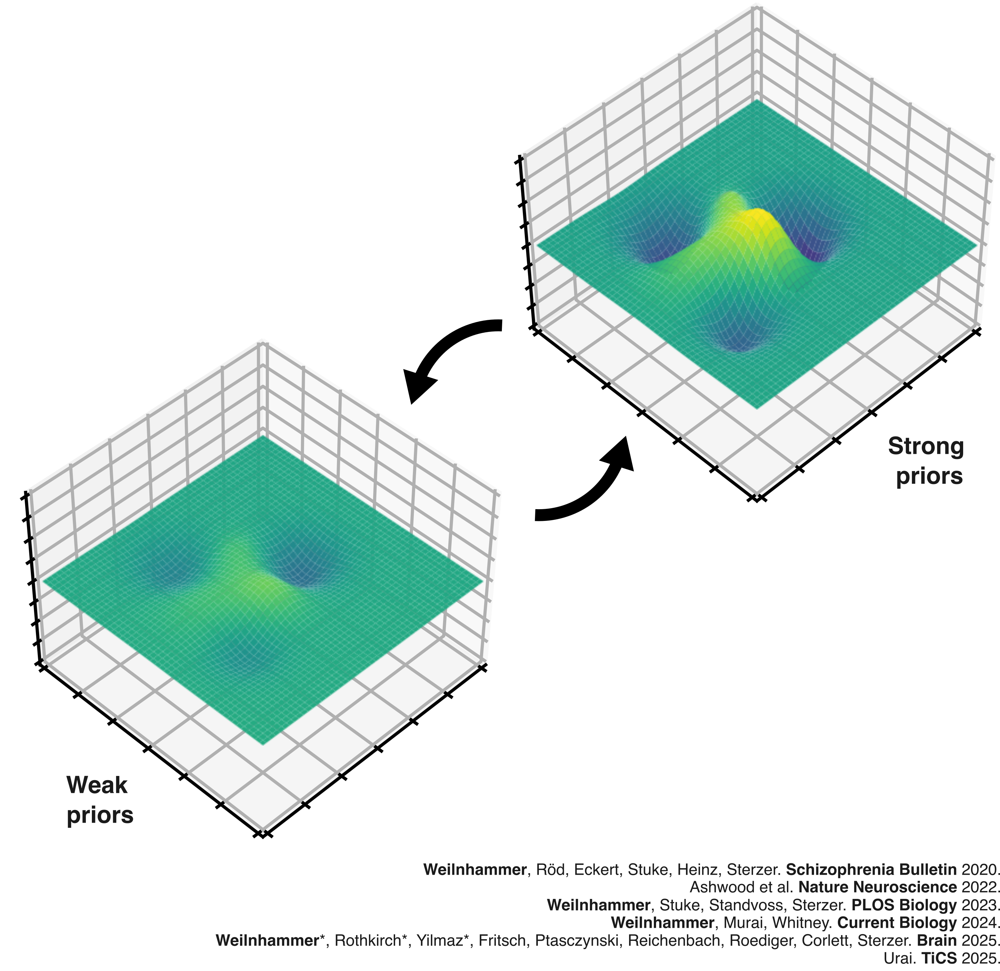
State-dependent changes
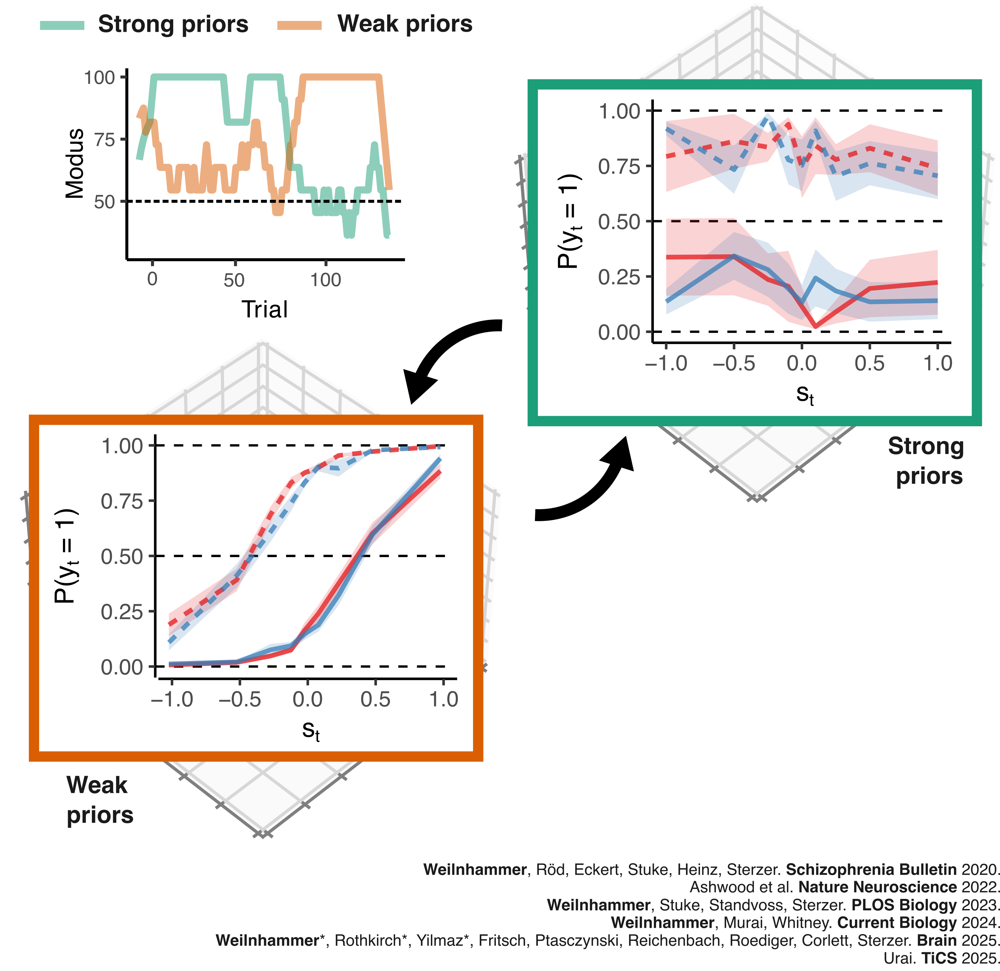
State-dependent changes
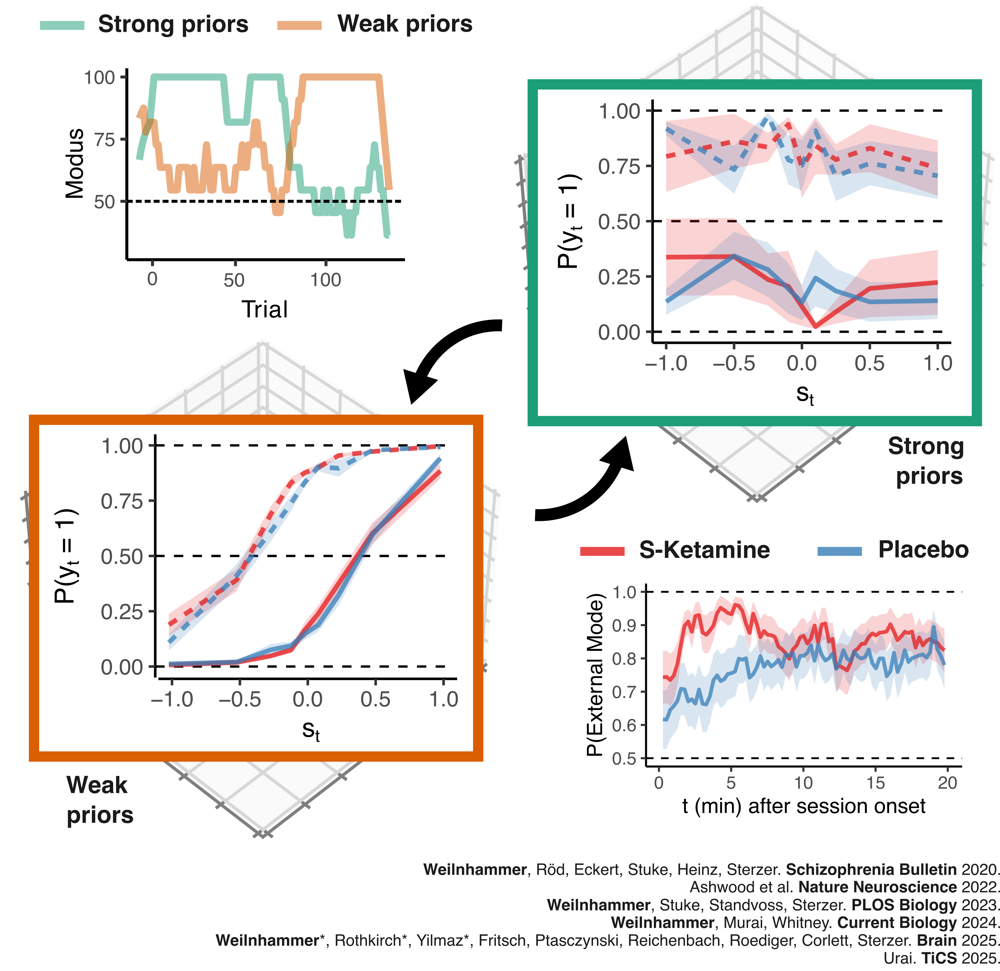
State-dependent changes
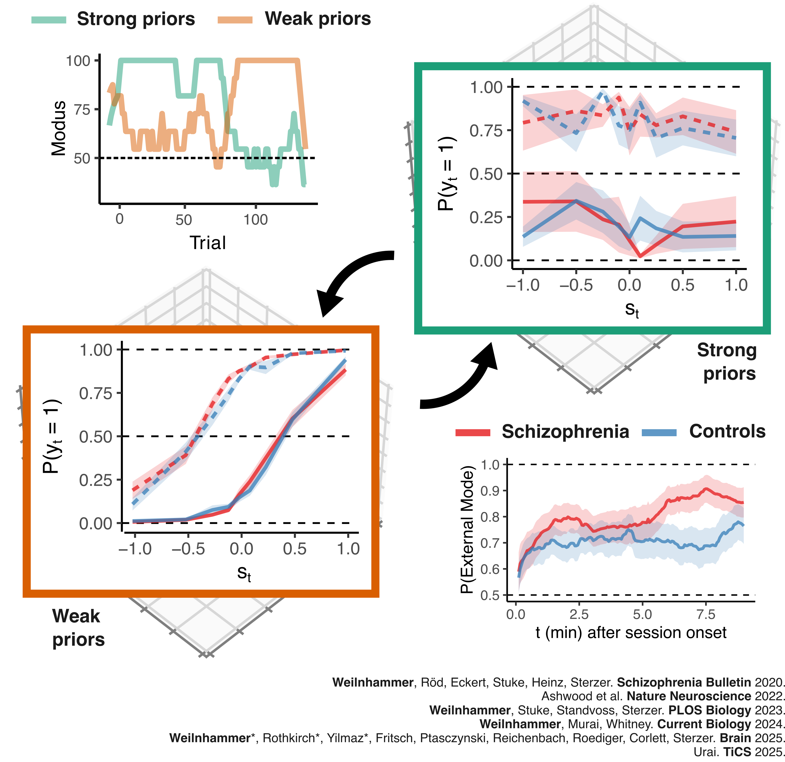
State-dependent changes
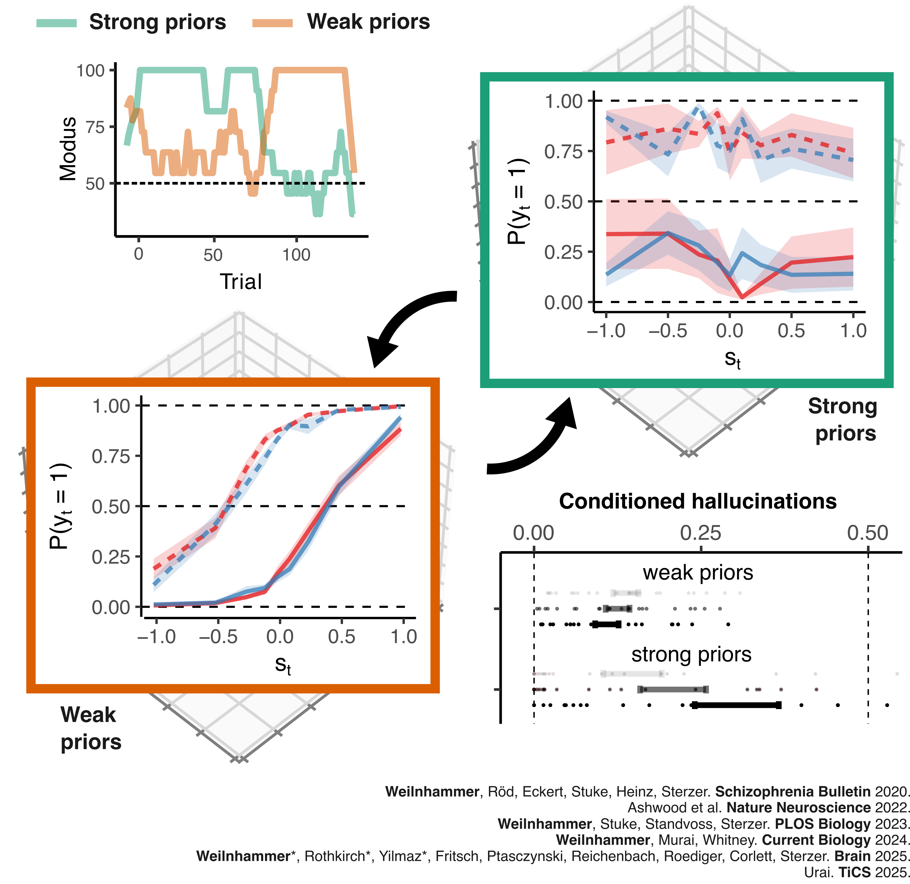
State-dependent changes
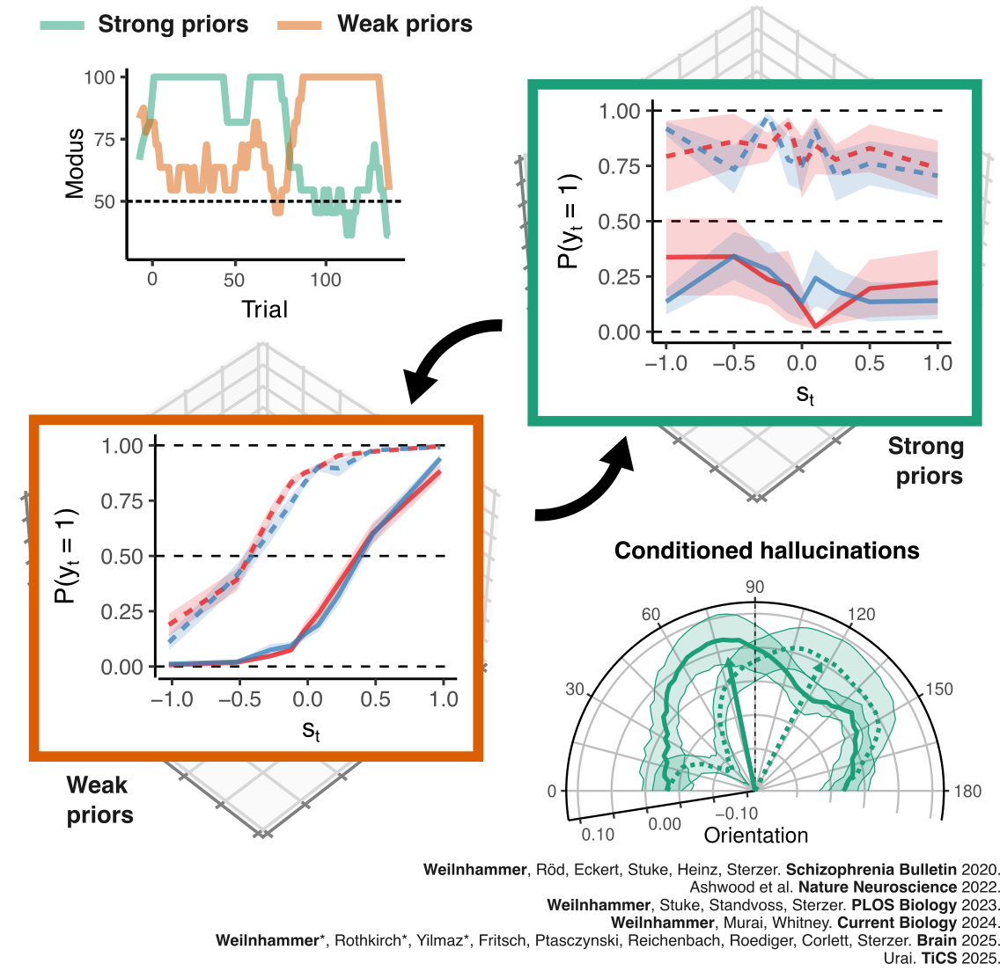
State-dependent changes
Task
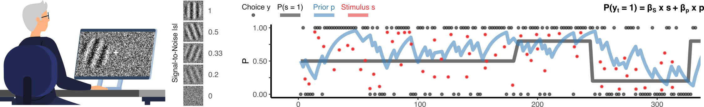
Pilot data (N = 150)
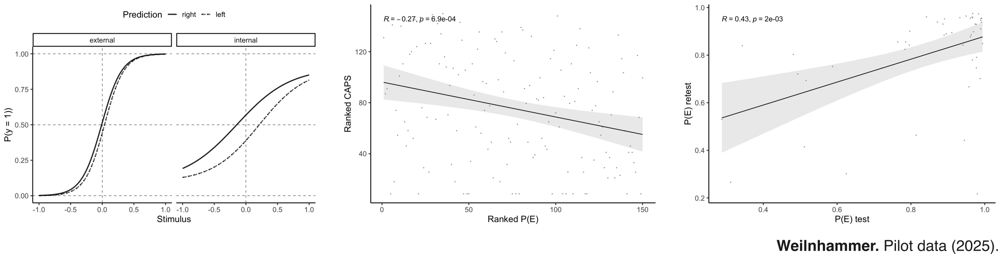
Pilot data (N = 150)
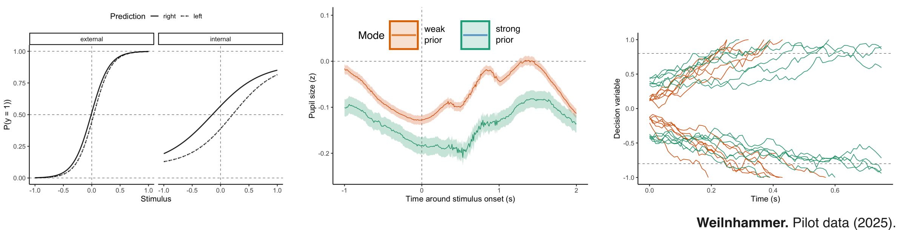
Cross-species analyses
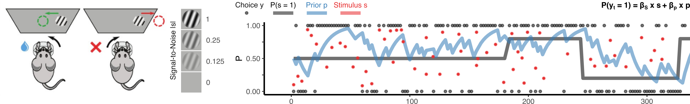
Hypothesis generation
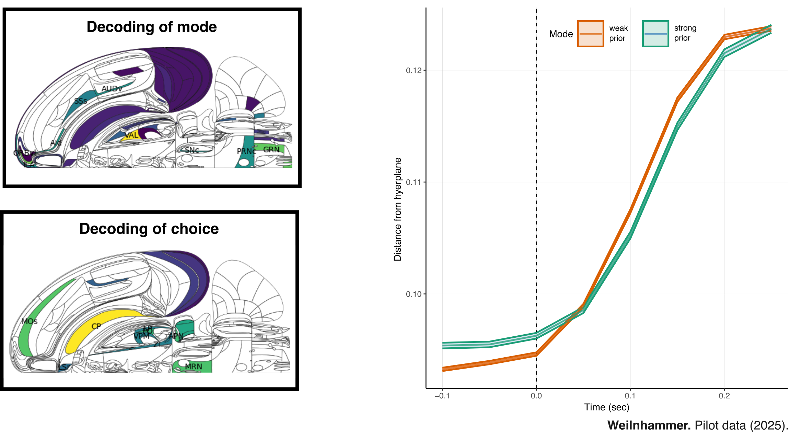
Hypothesis generation
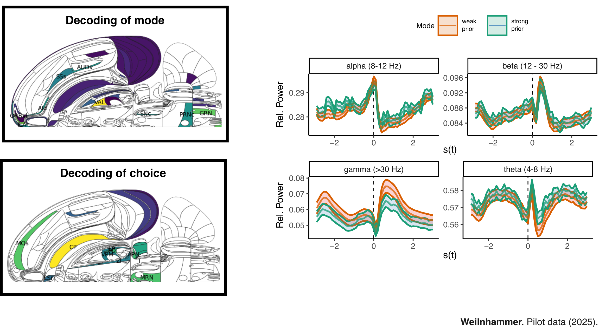
Hypotheses
H1 – Sensor-space decoding:
MEG sensor activity allows single-trial decoding of
stimulus, choice, and mode.
H2 – Source-level representational dissociation:
visual cortex encodes stimulus, choice, and mode;
prefrontal cortex encodes mode.
H3 – Mode-dependent decision dynamics:
internal → higher starting bias;
external → greater sensory-driven drift.
H4 – Network control:
IFC modulates the influence of
orbitofrontal cortex on visual cortex.
Paradigm
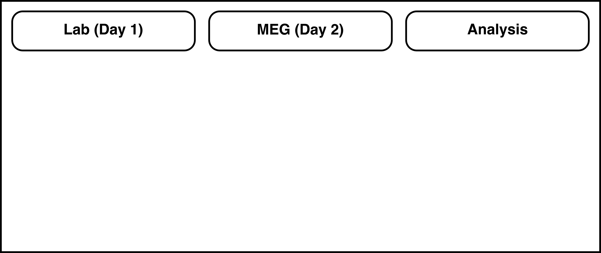
Paradigm
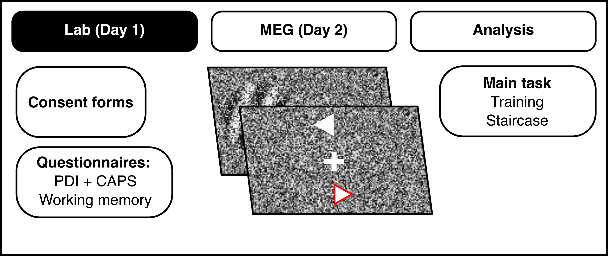
Paradigm
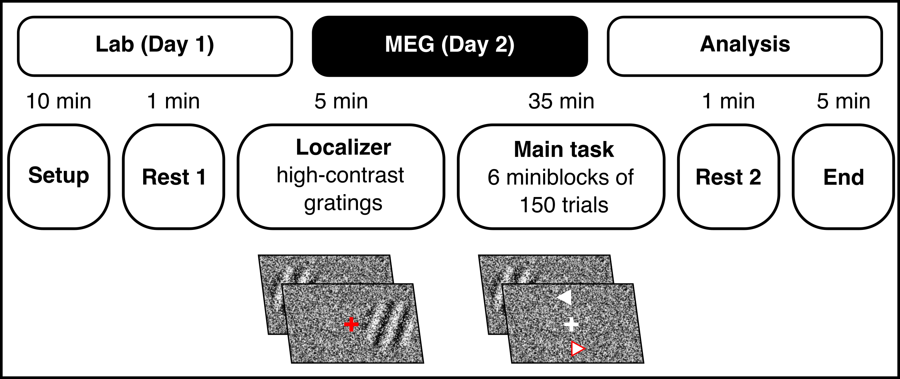
Paradigm

Logistics & Ethics
- Participants: 30 healthy adults, right-handed, normal or corrected vision.
- Lab session duration: 45 min total
- MEG session duration: 1 hours total (including setup and localizer).
- Approval: Covered by ethics protocol #0003 (Max Planck UCL Centre for Computational Psychiatry & Ageing Research).
- Cost: Max Planck Society
- Data sharing: Open upon reasonable request
- Timeline: To start as soon as possible